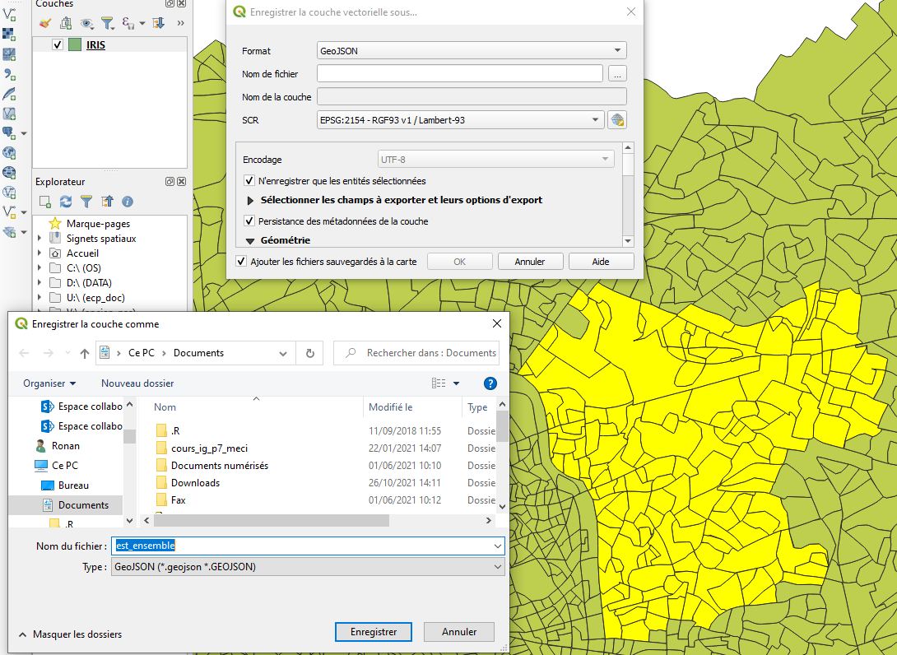

Introduction aux SIG - Séance 1
Définition, fonctionnalités, organiser son projet…
Premiers pas avec QGIS
2025-10-22
Londres, 1854
John Snow est un médecin britannique. Ses travaux sur la propagation du choléra dans le quartier de Soho à Londres en 1854 sont reconnus dans l’histoire de l’épidémiologie moderne et de l’analyse spatiale.
Il va identifier la cause de l’épidémie en utilisant un procédé simple, mais innovant, qui repose sur le principes de fonctionnement des SIG : superposer deux couches géographiques différentes :
Il déterminera que la transmission s’effectue par l’eau et identifiera le foyer de contamination : la pompe de Brewer Street.
 Carte de John Snow avec la localisation des lieux de résidence des personnes décédées du choléra.
Carte de John Snow avec la localisation des lieux de résidence des personnes décédées du choléra.
Londres, 1854
John Snow est un médecin britannique. Ses travaux sur la propagation du choléra dans le quartier de Soho à Londres en 1854 sont reconnus dans l’histoire de l’épidémiologie moderne et de l’analyse spatiale.
Il va identifier la cause de l’épidémie en utilisant un procédé simple, mais innovant, qui repose sur le principes de fonctionnement des SIG : superposer deux couches géographiques différentes :
Il déterminera que la transmission s’effectue par l’eau et identifiera le foyer de contamination : la pompe de Brewer Street.

Carte de John Snow avec la localisation des lieux de résidence des personnes décédées du choléra.
Un précurseur des applications SIG
Si John Snow avait utilisé un système d’information géographique…
2. Système d’Information Géographique ?
Historique
Le concept de Système d’Information Géographique s’est développé et a évolué avec le développement de l’informatique.
1950 – 1970 : début de l’informatique, premières cartographies automatiques.
1970 - 1980 : diffusion des outils de cartographie automatique/SIG dans les organismes d’État (armée, cadastre, services topographiques…
1980 - 1990 : croissance du marché des logiciels SIG, développement des applications SIG.
Depuis les années 90 et 2000 : diffusion de SIG plus légers, libres, d’applications web et banalisation de l’usage de l’information géographique (cartographie en ligne, calcul d’itinéraires, utilisation de la géolocalisation, base de données participatives.
Définition
Système informatique de matériels, de logiciels, et de processus conçus pour permettre la collecte, la gestion, la manipulation, l’analyse, la modélisation et l’affichage de données à référence spatiale afin de résoudre des problèmes complexes d’aménagement et de gestion. (Comité fédéral de coordination inter-agences pour la cartographie numérique, 1988)
La pratique des logiciels de SIG est un métier : sigiste.
Le SIG est également l’outil de référence des géomaticiens.
La géomatique est une discipline issue de la géographie et des développements de l’informatique (GEOgraphie + inforMATIQUE).
La géomatique regroupe l’ensemble des outils et méthodes permettant d’acquérir, de représenter, d’analyser et d’intégrer des données géographiques.
Principes et fonctionnalités
Les logiciels SIG permettent de superposer des couches géographiques de différentes natures, dans un même système de projection. Cela permet de réaliser de puissantes analyses croisées.
Ces logiciels permettent d’opérer sur l’intégralité de la chaîne de traitement des données géographiques :
Digitalisation (Saisir et abstraire)
Stockage et gestion (Base de données)
Analyse (Géotraitements, analyse spatiale)
Représentation (Cartographie)
Principes et fonctionnalités
Pour modéliser la réalité, on superpose plusieurs couches d’information géographique, vecteur et/ou raster.
Chaque couche géographique contient des objets de même type (adresses, parcelles, routes, bâtiments, cours d’eau, limites administratives…)
Une couche géographique = un type d’objet géographique : point, ligne, polygone (vecteur) ou image géoréférencée (raster).
Principes et fonctionnalités
Pour modéliser la réalité, on superpose plusieurs couches d’information géographique, vecteur et/ou raster.
Chaque couche géographique contient des objets de même type (adresses, parcelles, routes, bâtiments, cours d’eau, limites administratives…)
Une couche géographique = un type d’objet géographique : point, ligne, polygone (vecteur) ou image géoréférencée (raster).
Principes et fonctionnalités
Pour modéliser la réalité, on superpose plusieurs couches d’information géographique, vecteur et/ou raster.
Chaque couche géographique contient des objets de même type (adresses, parcelles, routes, bâtiments, cours d’eau, limites administratives…)
Une couche géographique = un type d’objet géographique : point, ligne, polygone (vecteur) ou image géoréférencée (raster).
Principes et fonctionnalités
Pour modéliser la réalité, on superpose plusieurs couches d’information géographique, vecteur et/ou raster.
Chaque couche géographique contient des objets de même type (adresses, parcelles, routes, bâtiments, cours d’eau, limites administratives…)
Une couche géographique = un type d’objet géographique : point, ligne, polygone (vecteur) ou image géoréférencée (raster).
Principes et fonctionnalités
Un SIG permet de travailler sur les trois composantes de l’information géographique :
Niveau sémantique
Les attributs qui décrivent les objets géographiques (ex : libellé, population, catégorie) peuvent être modifiés, supprimés, ajoutés et surtout requêtés : Il est possible de sélectionner des objets géographiques en fonction de la valeur des attributs (sélection attributaire).
Niveau géométrique
Possibilité de modifier la localisation et/ou la forme des objets géographiques, de calculer des surfaces, des distances, ou encore des zones tampons, de convertir des polygones en point… Les opérations possibles sur la géométrie des objets sont multiples.
Niveau topologique
Une fonctionnalité puissante qui consiste à requêter des objets par localisation, c’est à dire en fonction de leur positionnement par rapport à d’autres objets. Pour cela on peut utiliser une série d’opérateur, exemple : Contient, Croise, Intersecte, Est à l’intérieur…
Ex : Sélection d’objets géographiques ponctuels situés à une certaine distance (euclidienne) d’autres objets géographiques ponctuels
Principaux logiciels SIG

Installez QGIS !
Pour travailler depuis chez vous, nous vous conseillons d’installer QGIS sur votre ordinateur personnel (https://www.qgis.org/fr/site/forusers/download.html). Choisissez la version long terme (la plus stable).
3. Premiers pas dans un SIG et découverte de QGIS
Téléchargez les données sur Moodle
Présentation des données à disposition - Couches géographiques
Les couches géographiques vectorielles (points, lignes, surfaces) au format shapefile (. shp), auxquelles sont souvent associées des attributs (ex : capacité des salles de cinéma).
Équipements à implanter
- Bibliothèques et médiathèques, conservatoires de musique, missions locales pour l’emploi, salles de cinéma, issues de la plateforme open data de la région Ile-de-France, contient les localisations des équipements cibles pour votre étude
- Hôtels à insecte, ruches, lieux d’écoute à oiseaux, issus de la plateforme collaborative OpenStreetMap. Attention à la complétude des données !
Découpages territoriaux IRIS, communes, EPCI et départements de la Métropole du Grand Paris. L’IRIS correspond au découpage territorial le plus fin en France. Ce sera aussi la brique territoriale que vous utiliserez pour définir le lieu d’implantation (favorisez l’implantation de l’équipement dans tel et tel IRIS…). Source : IGN en géographie du 1er janvier 2025.
Présentation des données à disposition - Couches géographiques
D’autres couches géographiques sont disponibles. Elles serviront à définir des critères d’implantation pour optimiser l’implantation de l’équipement que vous aurez choisi..
BPE : une sélection pour l’Ile de France de 44 équipements géolocalisés que nous avons jugé adapté au regard des équipements à implanter. Source INEE, Base Permanente des Équipements 2021
Grille 200 m : Des données socio économiques dans des carreaux réguliers de 200 mètres de côté (le plus fin existant en France).
Couverture du sol : les parcs et jardins, les zones majoritairement dédiées aux fleurs, les forêts et vergers de la Métropole du Grand Paris. Source : OpenStreetMap.
Hydrologie : Le réseau hydrologique principal d’Ile de France (Seine, Marne). Source Plateforme Open Data de la Région Ile de France.
Transports : Le réseau routier principal et le réseau ferré en Ile de Franc e (source : OpenStreetMap ), ainsi que la localisation des arrêts de bus, de train, de tram et de métro (source : Plateforme Open Data de la Région Ile de France.
Présentation des données à disposition - Données statistiques
Fichiers au format Excel qui correspondent à des extraits pour la Métropole du Grand Paris des données officielles de l’INSEE à l’échelle des IRIS et à la commune.
BPE : Les mêmes équipements que ceux disponibles dans le dossier des couches géographiques, mais agrégés à l’échelle des IRIS et des communes (e.g. nombre de médecins généralistes par IRIS ou par commune). Source : INSEE, Base Permanente des équipements en 2021.
Démo : Population totale et structure par âge de la population. Source : INSEE.
Socio-éco : Structure de l’emploi (chômage, type de salariat, catégories socioprofessionnelles) de la population de plus de 15 ans selon la situation d’activité et niveaux de vie des ménages (pauvreté, revenus). Source : INSEE.
A partir de ces données, vous pourrez être en mesure de calculer des ratios d’intérêt : taux de chômage, part de la population jeune / âgée…
Présentation des données à disposition - Métadonnées
Les métadonnées apportent des éléments essentiels pour comprendre le contenu des ressources à votre disposition, leur origine et d’éventuelles informations sur leur utilisation. Leur consultation attentive est primordiale.
Avec ces métadonnées, vous êtes en mesure de répondre aux questions suivantes : Quelle est la signification du code “P18_POP0002” ? Quelle est son unité de mesure ? Qui a produit la donnée, quand ? Quelle est l’année de référence de l’indicateur ??
Ouvrir QGIS
Lancez l’application QGIS Desktop, comme vous le feriez avec n’importe quel logiciel :

Organiser son travail
L’utilisation d’un SIG nécessite de la rigueur méthodologique, car l’on se retrouve vite submergé de fichiers. Vous devez donc :
Travailler en projet.
Utiliser des intitulés de fichiers intelligibles.
Ranger vos données en utilisant des sous-répertoires.
Stocker votre projet sur une clef USB (et faire une copie).
Commencez par créer votre répertoire de travail (sur une clé USB de préférence). Téléchargez les données du Moodle et décompressez-les dans votre répertoire de travail. Ouvrez Qgis et créez un nouveau projet. (Projet/enregister/)
L’Interface de QGIS
Menu principal
La barre d’outils : Raccourci vers les outils les plus récurrents utilisés
Barre d’outils latérale : Par défaut, raccourci vers les options d’import de données.
La barre d’état : Niveau de zoom, échelle, coordonnées géographiques
Les panneaux : Explorateur, listing des couches géographiques chargées…
Le canevas de carte : visualisation des couches géographiques.
Importer une couche vectorielle
Pour importer des données facilement, utilisez la barre d’outil latérale.
Choisissez l’icône en fonction du type de données à importer (Vecteur, raster, csv…).
Choisissez la couche IRIS (Couches_geo > Decoupages_territoriaux)
Importez la couche IRIS dans QGIS
Sélection par attributs
Il est possible de sélectionner les objets géographiques à partir de leur table attributaire
Clic droit sur la couche IRIS
Ouvrir la table d’attribut
Sélectionner les entités en utilisant une expression
Sélectionnez uniquement les IRIS de votre espace d’étude
Sélection par attributs
Il est possible de sélectionner les objets géographiques à partir de leur table attributaire
Clic droit sur la couche IRIS
Ouvrir la table d’attribut
Sélectionner les entités en utilisant une expression
Choisir son espace d’étude (champ LIB_EPCI)
! Attention aux types de variables !
Sélectionnez uniquement les IRIS de votre espace d’étude
Export d’une sélection
Suite à la précédente sélection, clic droit sur la couche IRIS
Sélectionner “Exporter, sauvegarder les entités sous…
Sélectionner l’emplacement de votre dossier de travail et nommer la couche. Choisissez un format shapefile ou GEOJSON.
Sélectionner l’option N’enregistrer que les entités sélectionnées
 Exportez les IRIS qui composent votre espace d’étude
Gestion de la projection
La projection d’une couche géographique est indiquée dans ses propriétés générales.
Les couches géographiques s’affichent automatiquement dans le système de projection de la première couche géographique importée.
Pour modifier le système de projection, il suffit d’enregistrer une nouvelle version de la couche géographique concernée dans le système de projection souhaité (clic-droit sur la couche, enregistrez-sous…).
Importez la couche géographique contenant vos équipements d’intérêt, observez sa projection et enregistrez la dans la même projection que celle de vos IRIS.
Quelques options utiles
Pour sélectionner et zoomer, utilisez les différentes fonctionnalité de la barre d’outils.
Les icônes loupe permettent de zoomer/dé-zoomer. Il est également possible d’utiliser la roulette de votre souris. L’outil de sélection offre plusieurs solutions : sélection par clic, par polygone, à main levée…
Gestion de l’affichage graphique
Pour changer l’ordre d’affichage des couches, il suffit de les faire glisser à la position de son choix, comme des onglets dans un navigateur Web.
Pour visualiser l’ensemble d’une couche géographique, cliquez droit sur la couche concernée dans le panneau légende, puis cliquez sur Zoomer sur la couche.
 Importez la couche géographique des communes, placer les couches géographiques dans l’ordre suivant : IRIS, communes, votre équipement
Importez la couche géographique des communes, placer les couches géographiques dans l’ordre suivant : IRIS, communes, votre équipement
Gestion de l’affichage graphique
Modifier le style graphique (symbologie) d’une couche géographique
Double-clic sur la couche géographique concernée, puis onglet symbologie.
Jouer sur le style graphique (couleur de fond, bordures) des couches IRIS, communes et équipement.
Gestion de l’affichage graphique
Rajouter des labels (étiquettes) à la couche peut faciliter le repérage / la lecture de la carte.
Clic-droit sur la couche commune, puis propriétés. Cliquez ensuite sur “étiquettes”.
Faites apparaître sur l’espace d’affichage le nom des communes de votre espace d’étude.
Gestion de l’affichage graphique
Familiarisez vous avec vos équipements et votre espace d’étude en superposant intelligemment les couches IRIS, communes, départements ainsi que celle contenant votre équipement.
Jouez sur les styles, et améliorez la lisibilité
Exportez une image, enregistrez votre projet
Vous pouvez exporter le visuel créé au format .png. Attention néanmoins, il manque beaucoup d’éléments (titre, légende, sources…) etc. pour que cette carte soit valable ! Nous verrons cela dans les prochaines séances. Cela peut néanmoins constituer une base de travail et de réflexion.
Enregistrez votre projet à la racine de votre dossier de travail. Les couches que vous avec chargé et leur style associé seront ainsi enregistrées pour la prochaine utilisation
Où en sommes-nous ?
L’exploration attentive des données (et métadonnées) à notre disposition constitue toujours la phase préalable à la réalisation d’un projet SIG (hors collecte des données).
Plusieurs éléments fondamentaux pour initier un projet SIG ont aujourd’hui été abordés :
Consulter les données mises à disposition, organiser son projet SIG et enregistrer sa session de travail.
Importer une information géographique, tout en identifiant sa nature (point, ligne, surface, raster, vecteur ?)
Jouer avec la table attributaire. Observer le nombre d’objets géographiques contenus dans chacune des couches ainsi que les données associées aux géométries.
Identifier la projection utilisée pour chacune des couches géographiques. Savoir transformer la projection d’une couche pour que l’ensemble des couches disposent du même référentiel géographique.
Savoir extraire les informations importantes dans les métadonnées.
Gérer l’ordre d’affichage des couches géographiques et leur style.
 Carte de John Snow avec la localisation des lieux de résidence des personnes décédées du choléra.
Carte de John Snow avec la localisation des lieux de résidence des personnes décédées du choléra.


 Importez la couche géographique des communes, placer les couches géographiques dans l’ordre suivant : IRIS, communes, votre équipement
Importez la couche géographique des communes, placer les couches géographiques dans l’ordre suivant : IRIS, communes, votre équipement